МЫЛО
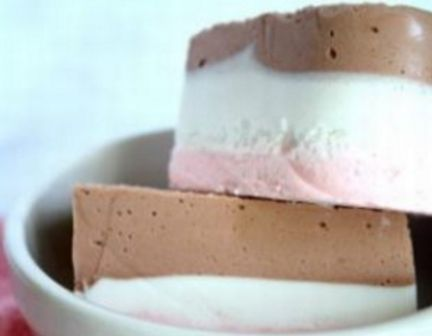
Слоеное мыло – бисквитный торт
Такое мыло не только воздушное на вид и ощупь, но и прекрасно увлажняет кожу. А способ изготовления такой «вкуснятины» довольно прост. Как и любое домашнее мыло, нужно подготовить основу, растопив ее на паровой бане. Далее добавить немного масла из миндаля, несколько капель отдушины. Все тщательно взбить, желательно миксером. Разлить в две емкости, одну так и оставьте с белой массой, а во вторую добавьте кофейного красителя. После все отправляйте в формочки, заливая слоями.
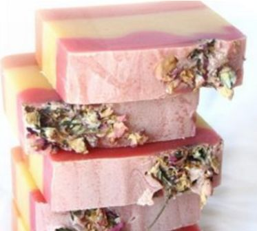
Мягкое мыло в домашних условиях
Как и в предыдущем рецепте, в основу нужно добавить красителя, на этот раз розового и желтого, и после заливать полученную массу в три слоя: розовый, желтый с небольшой волной и вновь розовый.
- основа – 200 гр.;
- масло персика, косметическое – две чайные ложечки;
- отдушина с ароматом «Роза» — пару капель;
- краситель пищевой: желтый, розовый – пару капель;
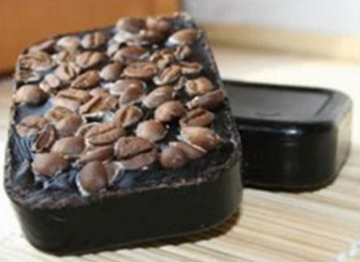
Мыло в домашних условиях – «Черный кофе»
Приятный и резкий аромат, полезный эффект скраба и солидный вид. Такое мыло не только отлично подойдет для утреннего пробуждения, но и станет превосходным подарком для мужчины;
- основа для мыла – 100 гр.;
- косметическое масло из авокадо – ложечка;
- мелкомолотый кофе – пара чайных ложек;
- эссенция с ароматом «Капучино» — 3 капли;
- цельные зерна обжаренного кофе (для декора);
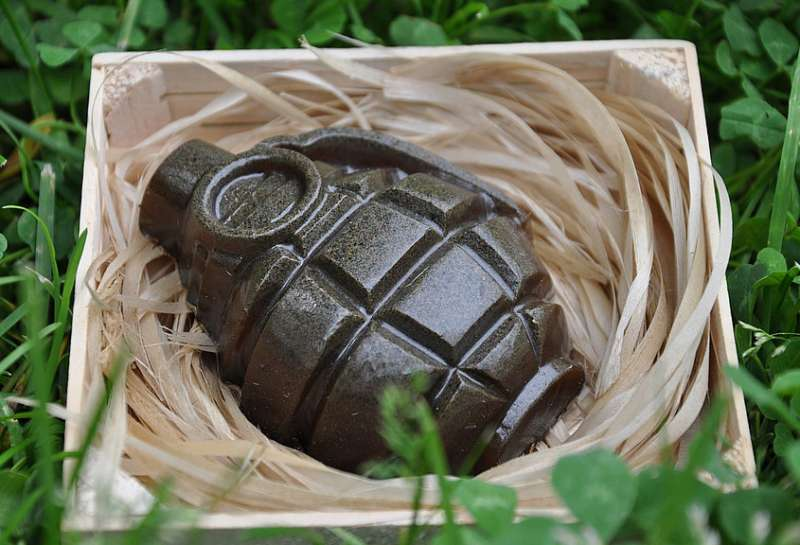
Мыло в домашних условиях – «Бум»
Порадовать представителей сильного пола бывает непросто. Уж не говоря о весьма распространенном заблуждении, будто мужчины равнодушны к подаркам. Но ведь это не так! За солидной оболочкой нередко прячется озорной ребенок, который так и ждет, чтобы его побаловали вниманием.
- Белая мыльная основа -100 грамм;
- Масло кофе – 1/3 чайной ложки;
- Пищевой ароматизатор «Джин»-2-3 капли;
- Краситель пищевой гелевый коричневый-1-2 капли;
- Форма «Лимонка»;
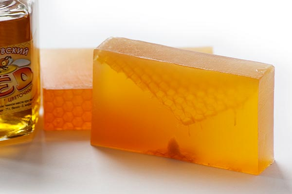
Мыло в домашних условиях – «Медовое лето»
О полезных свойствах меда мыловарам рассказывать не нужно. Не случайно же существует огромное количество рецептов с использованием этого натурального природного продукта. Сегодня мы представляем вашему вниманию один из них. Удивительное сочетание свежего меда и масло жожоба делает это мыло особенно полезным для утомленной солнцем кожи.
- Прозрачная мыльная основа – 100 грамм;
- Пищевой ароматизатор «Мед-Цветочный» - 5-6 капель;
- Масло жожоба рафинированное - 1/3 чайной ложки;
- Краситель пищевой гелевый желтый – 2-3 капли;
- Мед натуральный – 1/2 чайной ложки;
- Форма прямоугольник;
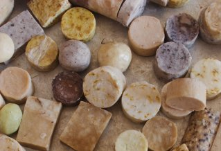
Мыло в домашних условиях – «От простуды»
Казалось бы, о какой простуде можно говорить летом? Ан, нет! Именно в это время года многие люди страдают от ангин, отитов, ОРВИ и прочих простудных заболеваний.
- Уникальная мыльная основа Luxury Rebatch Base, USA -100 грамм;
- Смесь эфирных масел эвкалипта, атласского кедра и ели – 1/3 чайной ложки;
- Сухоцветы вереска -1 столовая ложка;
- Форма Круг;
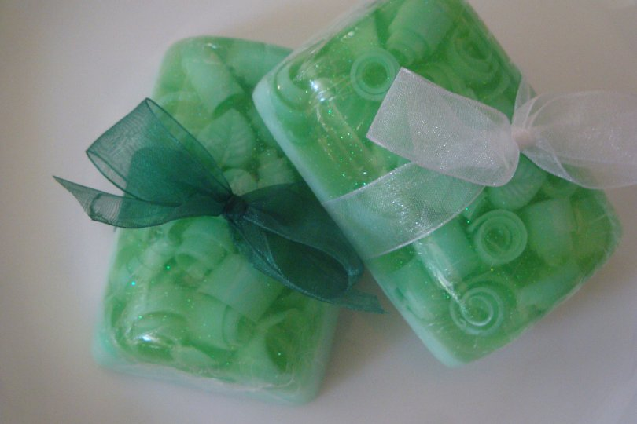
Мыло в домашних условиях – «Освежающая мята»
Как известно, у природы нет плохой погоды, а для мыловара в особенности! Холодно - сварим согревающее мыло с запахом солнечного апельсина и восточными пряностями, жарко - сделаем освежающее мыльце с мятой, мелиссой и лимоном.
- Прозрачная мыльная основа – 90 грамм;
- Белая мыльная основа – 40 грамм;
- Нерафинированное масло виноградной косточки – 1/2 чайной ложки;
- Эфирное масло лимон – 5-7 капель;
- Эфирное масло мята перечная – 5-7 капель;
- Эфирное масло - мелисса -2-3 капли;
- Краситель пищевой гелевый зеленый - 2-3 капли, или спиртовой раствор хлорофиллипта - 1/2 чайной ложки;
- Сухие измельченные листья мяты перечной или мелиссы - 1/2 чайной ложки;
- Глиттер малахит - на кончике ножа;
- Форма Овал профи;
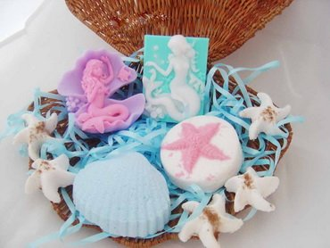
Мыло в домашних условиях – «Морская ракушка»
Нежное, воздушное мыло «Морская ракушка» как нельзя кстати подходит для жаркого лета. И не только потому, что внешним видом оно напоминает нам о счастливой отпускной поре, но и благодаря его уникальным свойствам.
- Натуральная органическая мыльная основа – 30 грамм;
- Вода – примерно 20-30 грамм;
- Глицерин – 5 грамм;
- Пищевой ароматизатор Орхидея – 5-6 капель;
- Масло ши карите – 1/5 чайной ложки;
- Краситель пищевой гелевый голубой – 1 капля;
- Форма ракушка;
- Овощечистка;
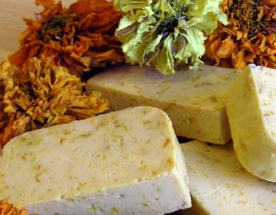
Мыло в домашних условиях – «Апельсиновое»
Пробудиться ото сна всегда поможет бодрящий цитрусовый аромат апельсинового мыла, рецепт которого мы предлагаем сегодня вашему вниманию.
- Белая мыльная основа – 100 грамм;
- Масло макадамии – 1/3 чайной ложки;
- Сухоцветы апельсина – 1 чайная ложка;
- Пищевой ароматизатор Апельсин – 8-10 капель;
- Форма «Апельсин»;
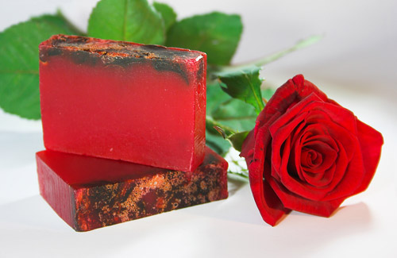
Мыло в домашних условиях – «Королева цветов»
Предлагаем вашему вниманию чудесное мыло, обогащенное увлажняющим комплексом масел. Безупречная эстетика этого продукта делает его отличным подарком для представительниц прекрасного пола.
- Прозрачная мыльная основа – 100 грамм;
- Увлажняющий комплекс для тела «Роза» - 1/3 чайной ложки;
- Эфирное масло - роза дамасская – 2-3 капли;
- Краситель пищевой гелевый алый – 1-2 капли;
- Сухоцвет розы красной;
- Форма прямоугольник;
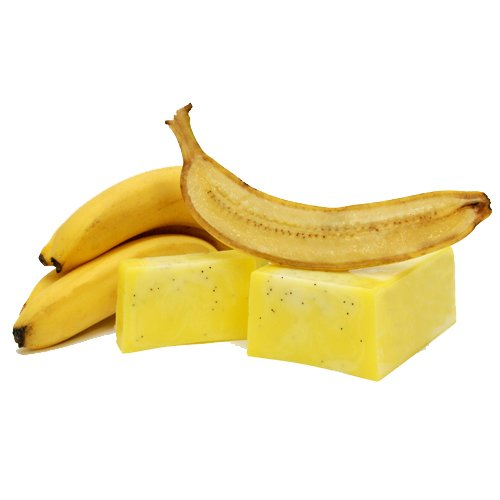
Мыло в домашних условиях – «Банановый рай»
Приятное мыло, обогащенное мякотью банана, нежно воздействует на кожу лица, питает и увлажняет ее, а также способствует разглаживанию мелких морщинок.
- Прозрачная мыльная основа – 100 г;
- Банановая масса – 1/3 чайной ложки;
- Мак – на кончике ножа;
- Масло от морщин на лице и декольте – 1/3 чайной ложки;
- Краситель пищевой гелевый желтый – 2-3 капли;
- Пищевой ароматизатор «Банан»– 2-3 капли;
- Форма «Золотой слиток»;
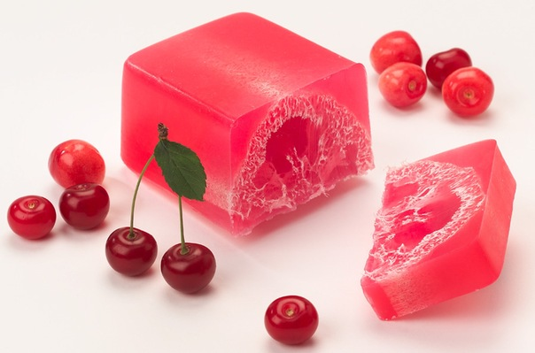
Мыло в домашних условиях – «Сладкая вишенка»
Природа пробудилась ото сна, и потому так хочется окунуться в яркие ароматы лета. И хотя время сочных плодов еще не наступило, истинный мыловар всегда знает, как ему поступить в подобной ситуации..
- Прозрачная мыльная основа – 500 грамм;
- Масло ши (Карите) – 1,5 чайной ложки;
- Пищевой ароматизатор Вишня – 30-50 капель;
- Краситель пищевой гелевый алый - 7 капель;
- Люфа;
- Форма под нарезку «Простая»;
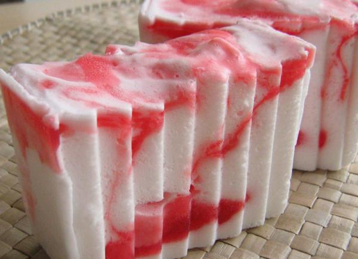
Мыло в домашних условиях – «Сочная клубничка»
"Это мыло сохраняя все полезные свойства обычного, в то же время обладает одной уникальной характеристикой – оно легче воды и поэтому не тонет в ней.
- Белая мыльная основа – 100 г;
- Небольшое количество красного мыла. У опытного мыловара всегда найдутся небольшие кусочки, оставшиеся от других рецептов. Если нет, всегда можно использовать любое готовое мыло красного цвета.;
- Жожоба масло рафинированное – 1/3 чайной ложки;
- Пищевой ароматизатор клубника – 2-3 капли;
- Форма «Волнушка»;
- Миксер,терка;
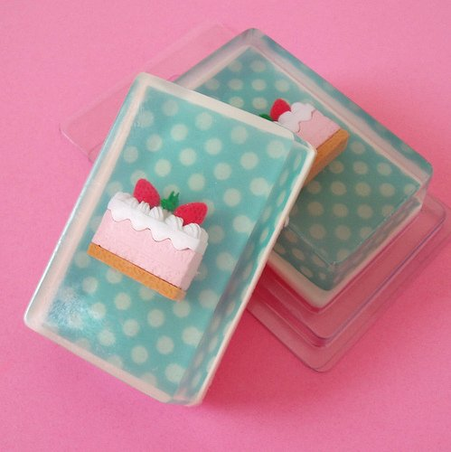
Мыло в домашних условиях – «Сладкие грезы»
Большинство рецептов имеет лишь один недостаток – значительную трудоемкость при реализации. Но это ни в коем случае не относится к мылу «Сладкие грезы».
- Белая мыльная основа - 30 грамм;
- Прозрачная мыльная основа - 80 грамм;
- Водорастворимая бумага – 1 лист;
- Ластик «Пирожное» - 1 шт;
- Масло авакадо рафинированное – 1/3 чайной ложки;
- Пищевой ароматизатор «Абрикос» - 2-3 капли;
- Форма «Прямоугольник»;
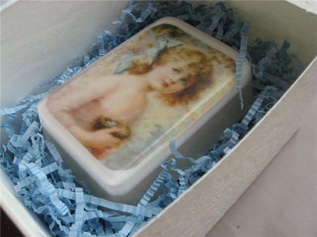
Мыло в домашних условиях – «Прекрасное фото»
Безупречное мыло, являющееся одновременно чудесным косметическим продуктом и стильным украшением интерьера ванной комнаты.Это чудесный подарок, который идеально подходит к любому случаю.
- Белая мыльная основа – 100 грамм;
- Прозрачная мыльная основа – 10-20 грамм;
- Смесь масел жожоба голден, сладкого миндаля и какао – 1/3 чайной ложки;
- Композиция эфирных масел «Ноктюрн» - 2-3 капли;
- Краситель пищевой гелевый оранжевый – 2-3 капли;
- Форма «Рамка-осень»;
- Шприц мыловара;
- Бумага водорастворимая -1 лист;
- Подарочная упаковка 003;